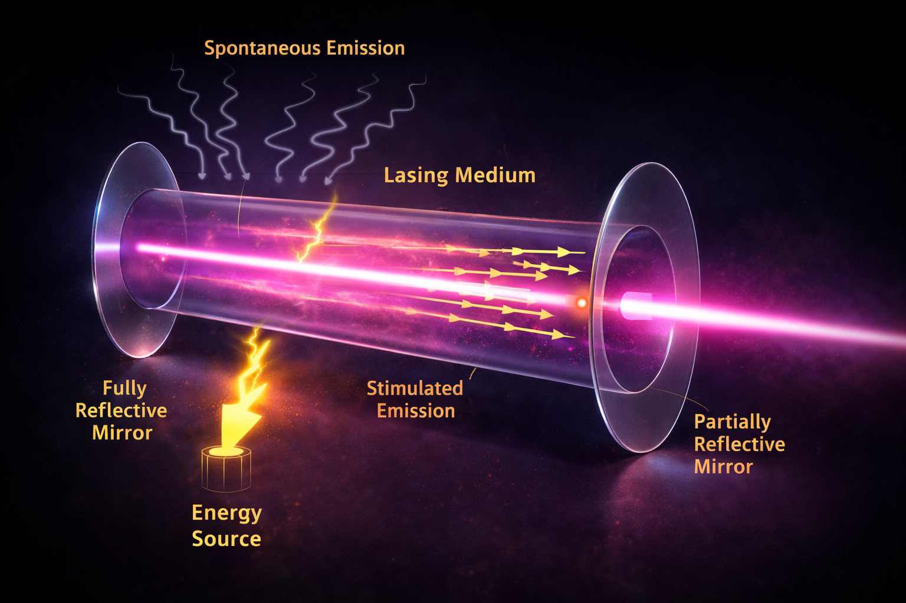

disclaimer!
- Nessun agente di intelligenza artificiale è stato maltrattato per la realizzazione di questa presentazione.
- Le analogie classiche verranno usate, abusate e poi abbandonate senza preavviso.
- Se qualcosa non sembra intuitivo, probabilmente la meccanica quantistica sta funzionando correttamente.
Il mio punto di vista
Il mio POV
digeritore di contenuti
modalità studente
mettersi in ascolto, fare domande, accettare la complessità
- Studio di articoli, testi avanzati e modelli matematici non immediati
- Accettare di non capire tutto subito
- Slow Study: fermarsi, prendere appunti, riscrivere con parole proprie, farsi supportare dall'AI e litigarci pure!
- Trasformare il disagio in comprensione
modalità insegnante
trasformare idee difficili in concetti accessibili
- Selezionare ciò che è essenziale e ciò che può essere tralasciato
- Ridurre la complessità senza perdere il significato
- Usare immagini, metafore ed esempi concreti
- Costruire un percorso comprensibile per chi ascolta
Il mio metodo
- Scomporre la complessità: studiare i dettagli tecnici e individuare le idee chiave.
- Riformulare: trasformare concetti avanzati in immagini, metafore, analogie.
- Trasmettere: costruire una narrazione accessibile, senza banalizzare.
L’obiettivo
- Mostrare che anche le idee più complesse possono essere comprese senza rinunciare al rigore.
- Trasformare concetti astratti in immagini, intuizioni e storie.
- Stimolare curiosità e meraviglia, senza banalizzare la scienza.
- Lasciare una domanda aperta, non una formula da ricordare.
Nobody understands quantum mechanics.
And that’s not a bug.
It’s the point.
Nessuno comprende davvero la meccanica quantistica.
E non è un limite.
È esattamente ciò che la rende tale.
— Richard P. Feynman

Meccanica Quantistica
Una guida gentile
alla rivoluzione della Fisica
prof. Diego Fantinelli
IIS G.A. Remondini | 08 gennaio 2026
Questa lampadina
non è una lampadina.
bisogna sapere che...
in Fisica una teoria è considerata valida solo se:
- è supportata da dati sperimentali ripetibili;
- utilizza equazioni matematiche coerenti con le teorie che già funzionano.
Fisica Classica
ha come scopo quello di interpretare e descrivere
il mondo macroscopico - quello percepito -
attraverso il linguaggio matematico
I tre principi della Dinamica
Isaac Newton
I principio della Dinamica
- principio d'inerzia -
-
Un corpo mantiene lo stato di quiete o di moto rettilineo uniforme
se la risultante delle forze è nulla.
$$ \sum \vec{F} = 0 \;\Rightarrow\; \vec{v} = \text{costante} $$
II principio della Dinamica
- legge fondamentale della dinamica -
-
La variazione del moto è proporzionale alla forza applicata.
$$ \sum \vec{F} = m \vec{a} $$
III principio della Dinamica
- principio di azione e reazione -
-
A ogni azione corrisponde una reazione uguale e contraria.
$$ \vec{F}_{AB} = - \vec{F}_{BA} $$
Fisica quantistica
ha come scopo quello di interpretare e descrivere
il mondo microscopico — quello subatomico —
Descrive il mondo "che non vediamo"
ma che costituisce il "mondo che percepiamo" come reale.
e ci riesce benissimo!
la fisica quantistica
dimostra
che il mondo reale è anche una
percezione
tranquilli:
il mondo continua a esistere anche dopo la meccanica quantistica.
È solo un po’ meno come ce lo immaginavamo.
La MQ non distrugge la realtà.
Distrugge le nostre certezze.
Perché parlare di
Meccanica Quantistica?!?

non si può farne a meno!
- Perché oggi la meccanica quantistica è ovunque, ma spesso viene citata senza essere compresa
- Perché premi Nobel e dati economici mostrano che non è teoria astratta, ma tecnologia reale
- Perché molte innovazioni digitali, dall’AI ai microchip, nascono da principi quantistici
il dato
~30%
del PIL degli Stati Uniti
dipende da tecnologie nate
dalla meccanica quantistica
Stima basata sull’impatto economico di semiconduttori, elettronica, fotonica, telecomunicazioni, imaging medico, ICT
Il caso della Cina
non solo economia,
ma strategia
- Investimenti massicci in tecnologie quantistiche
- Calcolo quantistico, comunicazioni, sensori
- Tecnologia come leva geopolitica
Unione Europea
un’economia ad alta intensità tecnologica
fondata su tecnologie quantistiche mature
ancora sottovalutata a livello geopolitico
Il mondo sta “spendendo”
per la Meccanica Quantistica
21.000
miliardi di dollari
USA + Cina + Unione Europea
"Sono del tutto convinto che Lui non stia affatto giocando a dadi"
— Albert Einstein - settembre 1926
"Einstein, smetta di dire a Dio cosa deve fare."
— Niels Bohr - settembre 1926
preludio
all'inizio fu l'atomo
Da dove iniziare?
Dal punto in cui la fisica classica smette di funzionare
La meccanica quantistica non nasce per complicare la fisica, ma per risolvere un problema reale
L’atomo secondo la fisica classica
Un nucleo centrale con elettroni in orbita
Un modello intuitivo, ispirato al sistema solare
L'atomo classico
gli elementi
- Una carica positiva: il nucleo (protoni)
- Una carica negativa: elettroni in orbita
- Modello ispirato al sistema solare
la struttura

Il problema fatale
Un elettrone in orbita è una carica accelerata
Secondo l’elettromagnetismo classico, dovrebbe emettere energia
emissione di energia \( \Longleftrightarrow \) perdita di energia
Risultato: l’atomo dovrebbe collassare
Eppure…
Gli atomi sono stabili
La materia esiste, le molecole esistono, noi esistiamo
La fisica classica non riesce a spiegare perché
La prima idea rivoluzionaria
L’energia non è continua
Gli elettroni possono avere solo certi valori di energia
Non possono perdere energia “a piacere”
Il limite del modello
Funziona… ma solo in casi semplici
Non spiega davvero che cos’è un elettrone
Serve cambiare il linguaggio con cui descriviamo la realtà
Il vero salto
L’elettrone non ha una traiettoria definita
Non possiamo dire “dove è”
Possiamo dire solo “dove può essere”
L’atomo quantistico
Non orbite, ma distribuzioni di
PROBABILITÀ
Gli orbitali descrivono regioni dello spazio
È così che la materia diventa stabile
L’atomo quantistico
cosa cambia
- L’elettrone non segue una traiettoria definita
- È descritto da una funzione d’onda
- Conta la probabilità di trovarlo in una certa regione
la struttura

atto secondo
nascita della meccanica quantistica
1900 — Max Planck

Quantizzazione dell’energia

Radiazione del corpo nero
La fisica classica fallisce
Secondo la fisica classica:
→ energia infinita alle alte frequenze
Catastrofe ultravioletta
Il quanto di energia
- Serve una nuova ipotesi.
- L’energia non è continua.
- È scambiata a pacchetti discreti.
L’ipotesi nascosta
- Non nasce come principio fisico.
- È un artificio matematico.
- Planck non ci crede davvero.
1905→1910
la fisica classica non molla
- La legge classica descrive bene le basse frequenze.
- Ma alle alte frequenze predice energia infinita.
- Risultato assurdo: catastrofe ultravioletta.
Rayleigh e Jeans
difendere l’indifendibile
- La legge classica descrive correttamente la radiazione solo a basse frequenze.
- Alle alte frequenze la teoria predice energia infinita.
- Questo risultato non è fisico e non può essere corretto sperimentalmente.
- Il fallimento è strutturale: il modello classico non è più valido.
$$ u(\lambda, T)=\frac{8 \pi k T}{\lambda^4} $$
Effetto fotoelettrico: prima di Einstein
H. Hertz (1886–87): scoperta accidentale
W. Hallwachs, A. Righi, J. J. Thomson (1888–1897): conferme sperimentali
P. Lenard (1902): dati incompatibili con Maxwell
A. Einstein (1905): interpretazione quantistica
R. Millikan (1914–16): conferma sperimentale
Einstein non scopre l’effetto: ne capisce il significato fisico.
1905 — Albert Einstein
Fotoni
- Quanto di radiazione elettromagnetica: è il portatore elementare dell'energia della luce, con energia $$ E=h \nu \Longleftrightarrow \nu= \frac{c}{\lambda} $$ e senza massa a riposo.
- la luce si comporta come un insieme di pacchetti discreti di energia, detti fotoni.
- Nasce il concetto di quanto.
Effetto fotoelettrico

Luce come particella
- La luce espelle elettroni solo sopra una frequenza minima.
- L’intensità non basta.
- La luce è composta da fotoni.
1913 — Niels Bohr
Livelli di energia
- Nell’atomo gli elettroni possono occupare solo valori discreti di energia, detti livelli energetici.
- Non sono permesse energie intermedie: l’elettrone non può “stare a metà” tra due livelli.
- Il passaggio tra due livelli avviene tramite assorbimento o emissione di un fotone, tale che $$ \Delta E = h\nu $$
- I livelli di energia spiegano la stabilità dell’atomo e l’origine degli spettri discreti.
Livelli di Energia

Stabilità dell’atomo
- Secondo la fisica classica l’atomo collasserebbe.
- Bohr introduce orbite e livelli energetici discreti.
- L’atomo diventa stabile.
Facciamo un passo concettuale, non cronologico
Per capire perché la fisica quantistica diventa davvero “strana”
Louis de Broglie (1924)
E se anche la materia fosse un’onda?
- La luce a volte è onda, a volte è particella.
- de Broglie ribalta tutto: anche le particelle hanno comportamento ondulatorio.
- Se è vero, allora anche elettroni e atomi possono fare interferenza.
Lunghezza d’onda della materia
$$ \lambda = \frac{h}{p} $$
Se aumenta l’impulso, la lunghezza d’onda diminuisce
Ernst Mach · Ludwig Zehnder
Due scienziati, due ruoli diversi
- Ernst Mach — fisico e filosofo della scienza.
- Ludwig Zehnder — fisico sperimentale.
La doppia fenditura
Quando osservare cambia il risultato
- Una particella produce interferenza.
- Se misuriamo il passaggio, l’interferenza scompare.
- Il fenomeno dipende dalla misura.
L’interferometro di Mach–Zehnder
La doppia fenditura… resa controllabile
- Una particella viene divisa in due cammini possibili.
- I cammini possono interferire o no.
- Dipende da come scegliamo di misurare.
L.A.S.E.R.
Light Amplification by Stimulated Emission of Radiation
- Amplificazione della luce mediante emissione stimolata di radiazione -
Perché il laser è invisibile?
- Un laser emette fotoni altamente direzionali.
- Nel vuoto (o nell’aria pulita) non c’è nulla con cui interagire.
- Senza interazione, non c’è luce visibile.
Quando il laser diventa visibile
- Spray = micro-particelle nell’aria.
- I fotoni vengono diffusi.
- Vediamo la luce solo dove avviene l’interazione.
Vediamo gli effetti quantistici.
Funzionamento del laser
Dentro un laser
Un laser funziona perché
costringe gli atomi a emettere luce
tutti allo stesso modo.
1923 — Arthur Compton
Fotone con quantità di moto
- La luce si comporta come un insieme di particelle: i fotoni.
- Nell’urto con un elettrone il fotone perde energia e quantità di moto.
- La variazione di lunghezza d’onda dipende solo dall’angolo di diffusione.
Effetto Compton

Il fotone è reale
- La luce scambia quantità di moto con gli elettroni.
- Risultato spiegabile solo con particelle.
1925→1927
Heisenberg · Schrödinger
Nuova meccanica
- Niente traiettorie, solo osservabili.
- La funzione d’onda descrive le probabilità.
- La realtà microscopica non è deterministica.
La funzione d’onda
la descrizione quantistica di una particella
non dice dove è una particella
ma che cosa può accadere
La funzione d’onda non è osservabile
Ma il suo modulo quadro sì:
$$ P(x) = |\psi(x)|^2 $$
La probabilità di trovare la particella in un certo punto
La funzione d’onda
$$ i \hbar \frac{\partial \psi}{\partial t} = -\frac{\hbar^2}{2m} \nabla^2 \psi + V \psi $$
Werner Heisemberg
Werner Heisemberg
Il principio di indeterminazione
non è un limite degli strumenti
è un limite della natura
a livello quantistico
Posizione e quantità di moto
non possono essere entrambe definite con precisione arbitraria
$$ \Delta x \, \Delta p \ge \frac{\hbar}{2} $$
più conosci una, meno conosci l’altra
Entanglement quantistico
- Due particelle formano un unico sistema.
- Le loro proprietà sono correlate.
- Misurare una significa determinare anche l’altra.
Anche se sono molto lontane.
1935 → 1964
Il problema dell’entanglement
EPR · Bell
EPR → Einstein-Podolsky-Rosen
Entanglement
- Sistemi quantistici descritti da uno stato comune.
- Le proprietà non esistono prima della misura.
- Le correlazioni non sono spiegabili localmente.
Einstein aveva torto?
- Einstein difendeva località e realismo.
- La meccanica quantistica li mette in crisi.
- «Dio non gioca a dadi».
Dal paradosso al Nobel
- 1964: John Bell trasforma una discussione filosofica in un esperimento.
- Anni ’80: esperimenti → violazione delle disuguaglianze.
- Il mondo quantistico è non-locale.
Nobel 2022 → entanglement confermato.
Nessuna teoria della realtà compatibile con la meccanica quantistica
può richiedere che eventi spazialmente separati siano indipendenti.
No theory of reality compatible with quantum theory can require spatially separate events to be independent.
— John Stewart Bell
coffee-break
2000→oggi
informazione e tecnologie quantistiche
Nobel per la Fisica (2020–2025)
| 2020 | Penrose · Genzel · Ghez | Buchi neri |
| 2021 | Manabe · Hasselmann · Parisi | Sistemi complessi |
| 2022 | Aspect · Clauser · Zeilinger | Entanglement |
| 2023 | Agostini · Krausz · L’Huillier | Attosecondi |
| 2024 | Hopfield · Hinton | Reti neurali (radici in fisica statistica) |
| 2025 | Clarke · Devoret · Martinis | Tunnel/quantizzazione in circuiti |
Nobel per la Fisica (2020–2025)
| 2020 | Penrose · Genzel · Ghez | Buchi neri |
| 2021 | Manabe · Hasselmann · Parisi | Sistemi complessi |
| 2022 | Aspect · Clauser · Zeilinger | Entanglement |
| 2023 | Agostini · Krausz · L’Huillier | Attosecondi |
| 2024 | Hopfield · Hinton | Reti neurali (radici in fisica statistica) |
| 2025 | Clarke · Devoret · Martinis | Tunnel/quantizzazione in circuiti |
Cosa ci sta dicendo questa sequenza
passare dalla “descrizione” al “controllo”.
- Verifica del “non-classico” (entanglement, Bell).
- passare dalla “descrizione” al “controllo”.
- Controllo del tempo del microscopico (attosecondi).
- Informazione: modelli fisici che imparano (reti neurali).
- Scala macroscopica: quantistica in circuiti reali (tunnel/quantizzazione).
Dove sta portando
- Sensori ultra-precisi (tempo, frequenze, campi).
- Comunicazione sicura (correlazioni quantistiche).
- Calcolo: qubit in hardware controllabile (circuiti, tunnel).
- AI + fisica: modelli “ispirati” alla fisica per estrarre struttura dai dati.
atto terzo
Il mondo non è come sembra
Il Sole esiste grazie alla
Meccanica Quantistica
la fisica classica non basta
Il problema classico
I protoni si respingono
Temperatura del Sole: ~15 milioni °C
Energia richiesta: molto più alta
La svolta quantistica
Effetto tunnel
La barriera non deve essere superata
La probabilità di fusione
decresce esponenzialmente
$$P \propto \exp\!\left(-\frac{2\pi Z_1 Z_2 e^2}{\hbar v}\right)$$
George Gamow (1928)
Un numero minuscolo
$\sim 10^{56}$
moltiplicato per numeri enormi
diventa inevitabile
Il picco di Gamow

In conclusione
Le stelle brillano
perché le particelle possono attraversare una barriera
I tre scienziati del Nobel 2025
Effetto tunnel, superconduttività, controllo quantistico
John Clarke
chi è
- Lavora su sistemi quantistici macroscopici
- Fisico sperimentale britannico
- Specialista in superconduttività quantistica
- Pioniere dei dispositivi a effetto tunnel
- Sensori quantistici ultra-sensibili
John Clarke
Il quantistico su scala macroscopica
- Ha portato l’effetto tunnel nei dispositivi reali
- Ha studiato sistemi quantistici “visibili”
- Ha aperto la strada ai sensori quantistici ultra-sensibili
Michel H. Devoret
Chi è
- Fisico franco-americano
- Leader nei qubit superconduttivi
- Ha reso controllabili sistemi quantistici complessi
- Fondamentale per il calcolo quantistico
Michel H. Devoret
Dal fenomeno al controllo
- Ha reso controllabili sistemi quantistici complessi
- Ha trasformato l’effetto tunnel in strumento ingegneristico
- È alla base dei qubit superconduttivi
John M. Martinis
Chi è
- Fisico sperimentale statunitense
- Leader dei processori quantistici Google
- Ha dimostrato la “supremazia quantistica”
- Ingegneria di sistemi quantistici reali
John M. Martinis
La quantistica che calcola
- Ha trasformato i qubit in macchine funzionanti
- Ha dimostrato la “supremazia quantistica”
- Ha portato l’effetto tunnel nel calcolo reale
Perché proprio questi tre?
Perché raccontano una storia completa
- Clarke: il quantistico diventa osservabile
- Devoret: il quantistico diventa controllabile
- Martinis: il quantistico diventa operativo
Dalla teoria alla tecnologia
Il lavoro premiato ha impatti reali
- Sensori quantistici ultra-sensibili
- Circuiti superconduttivi
- Qubit e computer quantistici
Il vero filo conduttore
è l’effetto tunnel
- Da limite teorico a risorsa fisica
- Da disturbo inevitabile a meccanismo controllato
- Da curiosità quantistica a base dell’ingegneria quantistica
atto quarto
lo stato dell'arte
Federico Faggin &
la Fisica Quantistica
Il ponte tra teoria e tecnologia
- Inventore del Silicon Gate
- Padre del primo microprocessore
- Tecnologia basata sui principi quantistici dei semiconduttori
Silicon Gate Technology
Silicon Gate Technology
- Introduzione del gate in silicio al posto del metallo.
- Controllo più preciso del canale elettronico nel transistor.
- Miniaturizzazione e affidabilità su scala industriale.
- La fisica dello stato solido diventa tecnologia digitale.
Transistor MOS con gate in silicio: base dei microprocessori moderni
La Quantistica nei Transistor
- Bande di valenza e conduzione
- Drogaggio del silicio
- Effetto tunnel
- Probabilità degli stati elettronici
Meccanica Quantistica
miniaturizzazione
rivoluzione digitale
Faggin e la coscienza
- La coscienza non è riducibile a sola dinamica materiale
- L’informazione come concetto fondamentale
- Questioni aperte: osservatore, misura, significato
Non fisica, ma riflessione filosofica informata dalla fisica
Perché Faggin è importante
per la Fisica Quantistica?
- Ha trasformato la MQ in tecnologia quotidiana
- Ha reso possibile la miniaturizzazione dei transistor
- Ha aperto nuovi dialoghi su coscienza e informazione
- Il mondo digitale nasce da idee quantistiche
domande?
epilogo
futuro responsabile
Nobel per la Fisica 2024
John Hopfield - Geoffrey E. Hinton
"Per le fondamentali scoperte che hanno consentito l’apprendimento automatico con le reti neurali artificiali."
Un Nobel che parla di futuro
Dalla fisica alle reti neurali: quando un’idea cambia il mondo
- Perché la fisica non è solo “teoria”: è tecnologia e potere trasformativo.
- Perché l’AI moderna nasce anche da modelli ispirati alla fisica.
- Perché il futuro non è neutro: va capito, discusso, governato.
Il costo fisico dell’intelligenza
Ogni calcolo è un processo fisico
- Le reti neurali non vivono nel cloud: vivono in hardware reale.
- Ogni bit elaborato richiede energia.
- L’informazione non è astratta: ha un costo termodinamico.
Datacenter e impatto ambientale
Quando il calcolo diventa infrastruttura globale
I datacenter consumano energia comparabile a intere città.
Calcolo intensivo = dissipazione = raffreddamento.
Il problema non è l’AI, ma come la realizziamo.
La fisica entra in gioco anche qui.
Geoffrey E. Hinton - Nobel per la Fisica 2024
- The Godfather of AI -
Discorso alla cerimonia di premiazione del Premio Nobel per la Fisica 2024, professor Geoffrey Hinton.
Quest’anno i Comitati Nobel per la Fisica e per la Chimica hanno riconosciuto i progressi straordinari compiuti in una nuova forma di intelligenza artificiale che utilizza reti neurali artificiali per imparare a risolvere problemi computazionali complessi.
Questa nuova forma di intelligenza artificiale eccelle nel modellare l’intuizione umana più che il ragionamento umano e ci permetterà di creare assistenti altamente intelligenti e competenti, in grado di aumentare la produttività in quasi tutti i settori. Se i benefici di questa maggiore produttività potranno essere condivisi equamente, si tratterà di un enorme progresso per tutta l’umanità.
Purtroppo, il rapido sviluppo dell’intelligenza artificiale comporta anche molti rischi a breve termine. Ha già contribuito alla creazione di camere dell’eco divisive, offrendo alle persone contenuti che alimentano indignazione e polarizzazione. È già utilizzata da governi autoritari per la sorveglianza di massa e da criminali informatici per attacchi di phishing.
In un futuro prossimo, l’intelligenza artificiale potrebbe essere impiegata per creare nuovi virus devastanti e armi letali spaventose, capaci di decidere autonomamente chi uccidere o mutilare. Tutti questi rischi a breve termine richiedono un’attenzione urgente e decisa da parte dei governi e delle organizzazioni internazionali.
Esiste inoltre una minaccia esistenziale di più lungo periodo, che emergerà quando creeremo entità digitali più intelligenti di noi. Non sappiamo se saremo in grado di mantenerne il controllo, ma oggi abbiamo prove che, se verranno sviluppate da aziende guidate da profitti a breve termine, la nostra sicurezza non sarà la priorità.
Abbiamo urgente bisogno di ricerca su come impedire che queste nuove entità sviluppino il desiderio di prendere il controllo. Non si tratta più di fantascienza.
— Geoffrey Hinton
fonte YouTube: Banquet speech — Geoffrey Hinton (estratto)